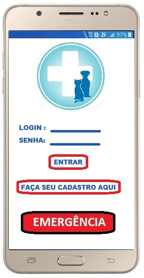
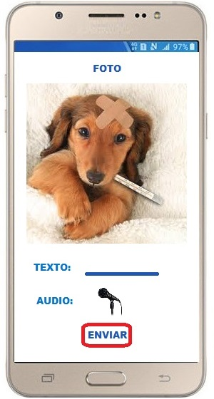
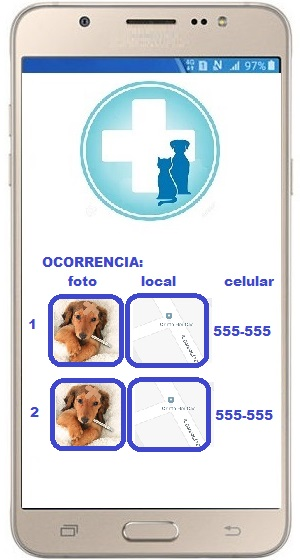
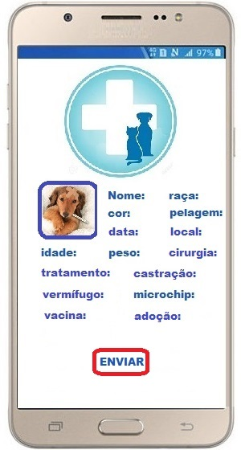
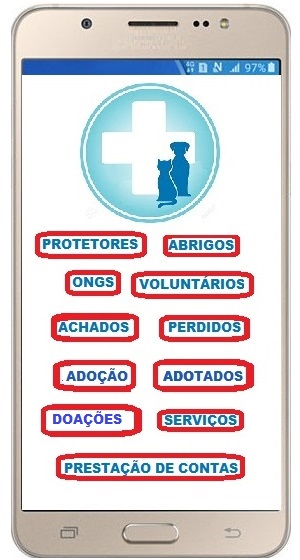
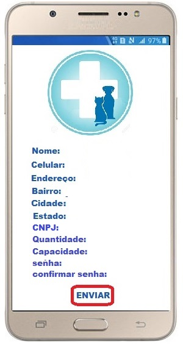
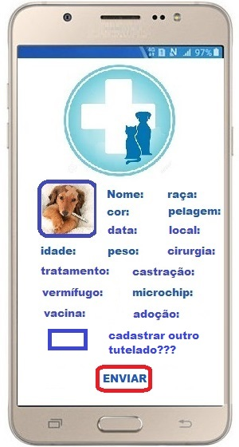
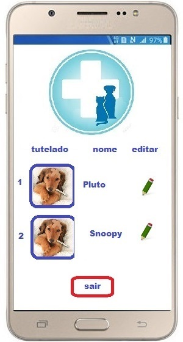
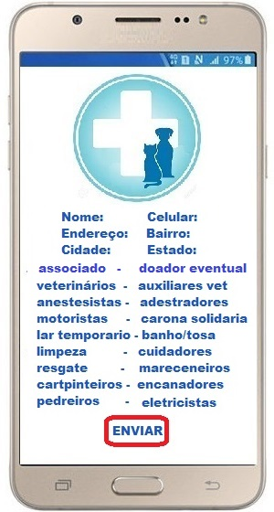
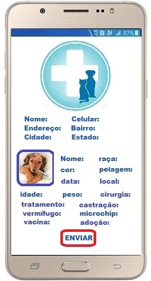

APLICATIVO E SITE
Em nosso site, além do institucional, teremos as mesmas funções do aplicativo, ou seja, login, cadastro, e etc, exceto o botão de emergência.
O aplicativo, é pensado da seguinte forma:
Tela 1

- Login: auto-explicativo
- Cadastro: qualquer usuário para acessar funções internas do app precisa cadastrar-se.
- Botão emergencia: qualquer usuário encontrando um animal em situação de risco, atropelado por exemplo, mesmo sem logar, clicará no borão "EMERGÊNCIA" e abrirá sua camera.
- A idéia é ser rápido para o usuário não desistir da acorrência.
Tela 2

Após fotografar o animal, o usuário optará por escrever um pequeno texto explicando a situação ou gravar um pequeno áudio, ou mesmo enviar a foto diretamente.
A foto é enviada juntamente com o celular do usuário e a localização automatica do local da ocorrencia.
Tela 3

A Sede da ONG, recebendo a foto, localização e celular do usuário, envia a Ambulancia para a ocorrencia. Entra em contato com o usuário para mais infos, por exemplo, se ficará no local, e etc.
No caso de 2 ocorrencias ao mesmo tempo, verificará ambas e decidirá qual é prioritária. Entrará em contato com o usuário da 2ª ocorrência avisando da prioridade e que a Ambulancia demorará "X" minutos.
Tais informações (data, hora, local, foto, etc) irão para o prontuário do(s) paciente(s) socorrido(s) para completar com os procedimentos após a recepção no P.A.(Pronto Atendimento) em toda sua vida pregressa.
Tela 4

No prontuário, além das informações da ocorrencia, teremos as caracterisicas do paciente.
Assim, tutelado por nossa ONG ou adotado, o pet terá todas as informações disponíveis por toda sua vida, as quais podem ser complementadas por sua nova familia.
Tela 5

Na "TELA 1", Assim que o usuário acessar o app, mas não para emergência, terá que logar ou fazer seu cadastro. Escolherá entre as opções:
- Protetores ou Abrigos.
- ONGS, onde precisam ter CNPJ.
- Voluntários, no caso de querer ajudar.
- Achados ou perdidos, no caso de ter achado um pet na rua, ou no caso de ter perdido seu pet.
- Adoção, para consultar pets para adoção com as características que lhe agradem.
- Pets adotados, para consultar caso tenha algum pet perdido e não encontrou dentre a opção "perdidos".
- Doações, para quem quiser doar qualquer coisa (inumeras) que possamos usar em prol dos animais.
- Serviços, para procurar qualquer serviço relacionado a pet.
- Prestação de contas, para saber como gastamos os recursos adquiridos, e principalmente, quais recursos e de onde vieram.
Tela 6

O usuário optando por "PROTETORES", "ABRIGOS" ou "ONGs", abrirá o cadastro para preenchimento.
Tela 7

Assim q enviar seu cadastro, abrirá a tela de cadastro de seus tutelados.
Ao preencher o nome do tutelado, abre a camera para fotografar o mesmo.
Preenchendo os outros campos, opta por cadastrar outro.
Caso o campo cadastrar não for escolhido, ao enviar, abre a tela com os tutelados cadastrados e opção de editar.
Tela 8

Ao clicar em editar, abre a TELA 7.
Ou opta-se por sair.
Tela 9

Na "TELA 5", o usuário optando por "VOLUNTÁRIOS", abrirá o cadastro para preenchimento e escolha entre várias opções.
Assim q enviar, receberá mensagem de agradecimento e que será contatado em breve.
Tela 10

Na "TELA 5", o usuário optando por "ACHADOS", abrirá o cadastro para preenchimento.
Quando terminar seu cadastro, abrirá as opções de cadastro do pet achado, iniciando com a camera para fotografar o mesmo.
Nenhum campo é obrigatório, pois com é um pet achado, o usuário não terá muitas das informações, as quais serão completadas na sequencia, por seu tutor, caso seja encontrado, pela ONG quando de sua consulta, ou por sua nova familia, no caso de ser doado.
Tela 11

Na "TELA 5", o usuário optando por "PERDIDOS", abrirá o cadastro para preenchimento.
Quando terminar seu cadastro, abrirá as opções de cadastro do pet perdido, iniciando com a galeria de fotos do celular para incluir a foto o pet perdido.
Nenhum campo é obrigatório, pois é possível que o tutor não terá muitas das informações, as quais serão completadas na sequencia, por seu tutor, caso seja encontrado, pela ONG quando de sua consulta.
Tela 12
Na "TELA 5", o usuário optando por "ADOÇÃO", abrirá a tela onde poderá fazer a busca por filtros pelos pet que estão para adoção dentre todos os que estão cadastrados em nossa base de dados.
Clicando na foto, terá todas as informações do pet.
QRI 35, casa 9, condominio santos dumont, santa maria, Brasilia.
Será disponibilizado um aplicativo com múltiplas funções, entre elas; cadastramento de protetores, abrigos, ongs, e seus animais, animais perdidos, animais achados, e botão de emergencia, o qual acionará nossa cãobulancia imediatamente para resgate do animal em risco, e a função que trará credibilidade ao projeto, a prestação de contas, absolutamente transparente, pública e minuciosa, de todas as despesas e, principalmente, de todas as receitas da ONG.